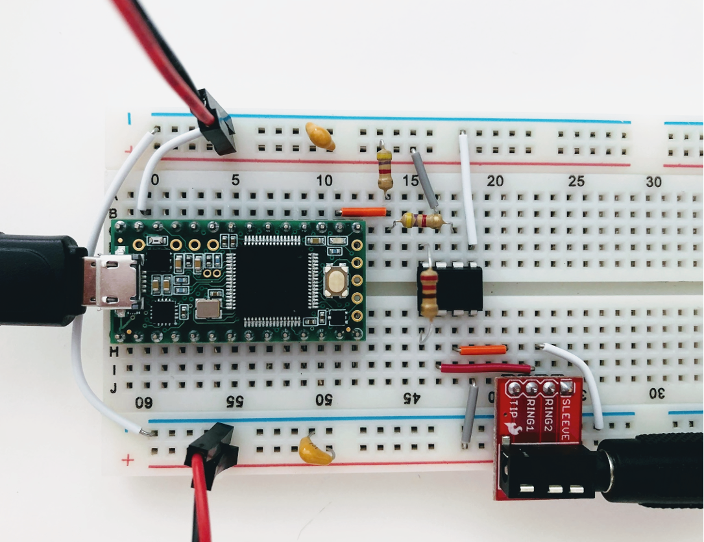
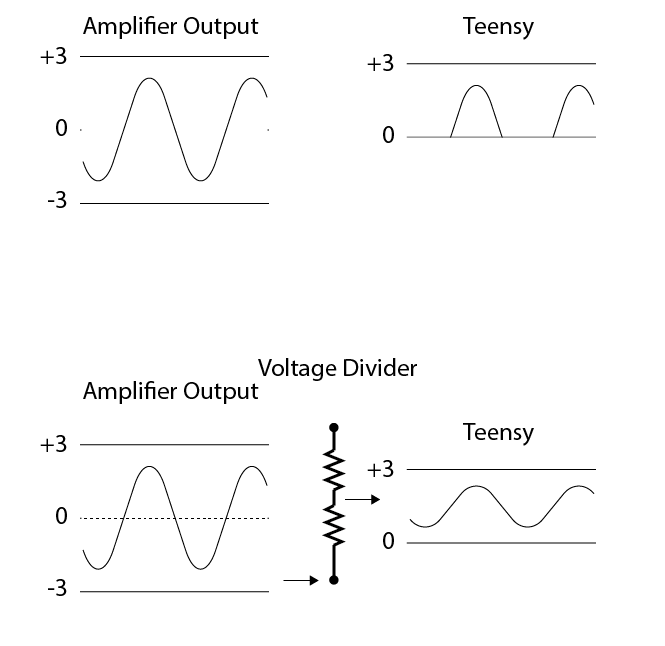

Exercises Day 3 TA¶
Note
By the end of day everyone should have EMG working. Signals don’t have to be perfect, but movement should be detectable. This day is usually a lot of debugging and going over things that have been covered before, making sure everyone understands what is going on.
Today we are going to build an EMG circuit! We’ll use the electrodes in your kit, an instrumentation amplifier as our headstage, and the Teensy will be our acquisition board. We now have all the steps of the acquisition in place to simulate a lab experiment.

Electrodes¶
Warning
Your kit contains surface electrodes that we will use for EMG. These measurements involve attaching yourself to a circuit, so follow these rules to be safe:
Do not use anything other than the recommended batteries to power your circuit. Do not connect your circuit to mains supply for power, ground, anything.
Only connect the EMG electrodes to one arm. Don’t attach them to both arms. This is to avoid any current travelling across your heart.
If you are using a laptop, disconnect your laptop charger & run from battery while the electrodes are attached to you. This is to prevent any surges from mains supply from backpropagating through your laptop, to you.
The electrodes clip onto the cable with three wires. We’ll be using an audio-to-breadboard jack to get the signal from the electrodes into the breadboard.

EMG circuit¶
Warning
The disposable electrodes in the kit are single-use, so do not attach them until you are sure your circuit is working and that you have the correct position (see below).
First, we’ll wire up our electrodes to our instrumentation amp and read out the result with our oscilloscope. Later, we’ll add the Teensy.
Replicate the following circuit:

Bypass capacitor = 104
Resistor: 220 Ohm
Now click the surface electrodes onto the ends of the cable, and click the jack into the breadboard adaptor.
Black cable = ground electrode = Ring 1
Blue cable = - (reference) electrode = Ring 2
Red cable = + electrode = Tip
Attach your oscilloscope as shown:

If you tap the electrodes, you should see the trace of your PicoScope respond. If not, troubleshoot your circuit until you do.
Note
Problems here are often:
Forgetting to connect both grounds
Being offset by 1 position in breadboard. Get the group to help each other spotting small errors like that.
3. If your picoscope responds to tapping your electrodes, you are ready to measure EMG! Place the measurement and reference electrode very close together, on the part of the forearm where you can feel your muscle when you tense it. You should see a clear signal in the oscilloscope when you tense your muscles. Moving your arm will cause large motion artefacts (why?) so try to find a setup that gives you a consistent and clear signal.
The resistor across the instrumentation amplifier sets the gain of the amplifier. Change the gain of the amplifier by changing Rg. What happens when the value for Rg is very low?
Tip
If you have a lot of noise on your recording, try:
Disconnecting from 60/50Hz contaminated ground by using laptop battery
Try twisting or braiding the cables
Streaming data from a microcontroller¶
We’re going to start streaming data to the pc, by using our Teensy microcontroller to digitize the analog signals we collect.
Connect the output from your amplifier to an analog input node on the Teensy as shown below. This is a 220 Ohm resistor across the instrumentation amplifier, and a voltage divider made of two equal resistors (anything above 1KOhm, see the text on ‘shifting the bipolar signal up’ below).
Upload ‘Firmata.ino’ to the Teensy (code here: Firmata )
Open Bonsai and create an Analog Input node. Double-click to visualise your signal.
Connect this to a ‘Csv Writer’ node to save your signals.
Note
It should work with just ‘AnalogInput’. It’s nicer to use the ‘CreateArduino’ node and specify the Teensy, this also allows you to set the sampling interval, so you can increase it if the computer is struggling. Use .csvwriter to save signals.
Shifting the signal¶
The EMG signal is from -3 to +3V, but we can only digitize positive voltages. With a simple trick we can shift the signal up from -3 to 3V exactly into the 0-3V range we want, while still providing the amplifier with a -3 to +3V range.
 This voltage divider is not going to mess with our signal, because the signal is protected by the amplifier. You could in theory use almost any reasonable values for R, over 1kΩ, because the output impedance of the instrumentation amplifier is low and the input impedance (of the teensy analog input) is decently high. If you make R too small, this will still work on paper, but you’re now asking the op-amp to keep shovelling current into ground (or in this case, the 3V rail) through a small R, and eventually even an op-amp will get unhappy.
Acknowledgements¶
Written by:
Alexandra Leighton
Joana Neto
Jakob Voigts
Aarón Cuevas López
Jon Newman
With material from:
Joana Neto, 2018; Materials and neuroscience: validating tools for large-scale, high-density neural recording, 2018.
Jon Newman and Jakob Voigts, 2017; Intro to Chronic Ephys (presentation at TENSS)
Mitra Javadzadeh, 2017; Building an analog ephys recording system (practical exercises developed for TENSS)
Licensing¶
This work is licensed under CC BY-SA 4.0.
To view a copy of this license, visit https://creativecommons.org/licenses/by-sa/4.0/